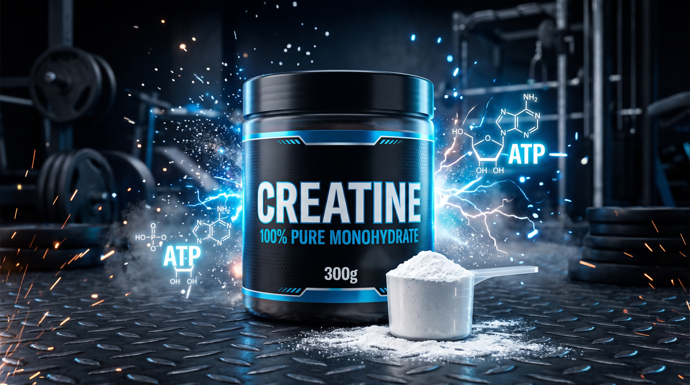

Potência nos Treinos. Clareza Mental e Vitalidade no Dia a Dia.
Muito além da musculação: a Creatina é a molécula de recarga rápida de energia (ATP) das suas células. Na academia, destrava força e massa magra. Fora dela, combate o cansaço mental, protege neurônios, acelera a cognição e preserva a saúde muscular de quem não pratica exercícios intensos.

Estoque basal reduzido: fadiga precoce estimada na 6ª repetição.
Calculadora de Dose Científica
Ajuste seu peso corporal e determine a dosagem exata calculada a partir de evidências de saturação celular.
Efeito da Saturação de Fosfocreatina em Sobrecarga
Observe o comportamento celular entre a exaustão anaeróbica precoce e a capacidade de ressíntese imediata de ATP.
O ATP intramuscular se esgota no 4º segundo de contração intensa. Falha concêntrica prematura.
EXAUSTÃO ANAERÓBICA ATINGIDAA fosfocreatina doa grupos fosfato instantaneamente, viabilizando repetições adicionais completas.
POTÊNCIA ANAERÓBICA SUSTENTADADissolução Completa em Menos de 5 Segundos
Zero sedimentação arenosa no fundo do copo. A malha de micronização 200 Mesh assegura solubilidade e absorção gástrica sem desconforto.
Dispersão homogênea instantânea, sem sensação de mastigar grânulos.
Com partículas vinte vezes menores do que as fórmulas convencionais, o pó se dispersa uniformemente ao tocar a água. O resultado é absorção intestinal eficiente e zero resíduo desperdiçado nas paredes da garrafa.
Mecanismos de Ação no Organismo
A creatina é um composto orgânico sintetizado pelo fígado e rins, essencial para o sistema energético celular em tecidos de alta demanda energética — músculos esqueléticos, coração e cérebro.
Progressão consistente de sobrecarga nos treinos
A creatina permite que as fibras musculares do tipo II sustentem contrações anaeróbicas por intervalos prolongados. Estudos clínicos apontam aumentos médios de força em exercícios multiarticulares de 8kg a 15kg após o período de saturação.
Atestado por meta-análises internacionais em fisiologia do exercício.Maior estímulo mecânico para hipertrofia muscular sustentável
Turgor muscular aumentado por água intracelular
A creatina induz hidratação osmótica exclusivamente DENTRO da célula muscular (hidratação intracelular). Esse estado estimula a síntese de proteínas e reduz o dano tecidual, sem reter líquido sob a pele ou provocar edema subcutâneo.
Zero retenção extracelular. Densidade muscular real e preservada.Proteção contra microlesões e turgor celular pleno
Estabilidade energética para sinapses cerebrais
O tecido cerebral é responsável por cerca de 20% do gasto energético do corpo em repouso. A suplementação com creatina transpõe a barreira hematoencefálica, melhorando a memória de trabalho, atenuando a névoa mental pós-refeição e reduzindo o impacto cognitivo da privação de sono.
Comprovado em testes de neuroimagem e cognição computacional.Suporte de ATP neural para raciocínio lógico continuado
Prevenção de sarcopenia e autonomia na terceira idade
A partir dos 30 anos, ocorre uma perda anual fisiológica de massa magra e densidade óssea. A suplementação contínua preserva o tecido muscular postural, auxilia na modulação glicêmica e mantém a independência funcional em atividades rotineiras de adultos sedentários e idosos.
Recomendado em protocolos clínicos de geriatria e medicina preventiva.Combate a perda muscular involuntária e mantém a vitalidade diária
Dossiê Químico e Comparativo
Sem maltodextrina, sem aditivos de volume e sem aromatizantes. 100% Creatina Monohidratada Pura em malha 200 Mesh.
PAINEL NUTRICIONAL
| Critério de Análise | VOLT CREATINE | Creatina Convencional |
|---|---|---|
| Pureza Atestada | 99.9% Analisada em Laboratório | Fórmulas com umidade residual |
| Granulometria | 200 Mesh (Pó Micronizado) | Malha 80 (Grânulos espessos) |
| Tempo de Dispersão | Menos de 5 segundos em água | Sedimentação no fundo do recipiente |
| Digestibilidade | Absorção intestinal sem estresse gástrico | Potencial irritação em dosagens elevadas |
Mitos vs. Fatos Científicos
O que ensaios clínicos controlados e meta-análises dizem sobre a segurança e os benefícios reais.
"A creatina sobrecarrega a função renal ou provoca cálculo?"
Meta-análises com mais de trinta anos de acompanhamento clínico reiteram que a creatina é completamente segura para indivíduos com rins saudáveis. A elevação de creatinina sérica é um subproduto metabólico natural, sem representar dano glomerular.
"A suplementação engorda ou gera inchaço no rosto?"
A creatina tem zero calorias e não estimula adipogênese. A atração de água ocorre estritamente para o compartimento intracelular do músculo esquelético, sem retenção extracelular subcutânea ou inchaço facial.
"É necessário pausar a ingestão nos finais de semana?"
A eficácia da creatina depende do acúmulo contínuo nos estoques teciduais. Suspender o uso nos finais de semana causa declínio progressivo da concentração celular de fosfocreatina, enfraquecendo a estabilidade dos benefícios.
"Quem não pratica musculação não deve tomar creatina?"
Ensaios clínicos modernos demonstram benefícios substanciais em idosos, estudantes e sedentários na atenuação de fadiga cognitiva, auxílio na sensibilidade insulínica e desaceleração da perda involuntária de tecido muscular decorrente do envelhecimento.
Relatos de Performance e Longevidade
Depoimentos registrados de quem implementou a suplementação em treinos de força ou no cotidiano profissional.
"Após manter o protocolo de 5g diários sem interrupções por três semanas, minha carga no supino subiu de 38kg para 44kg por lado. O ganho perceptível está na última repetição da série, na qual a falha mecânica demora consideravelmente mais para acontecer."
[USO CONTÍNUO] • Protocolo Diário 5g"Em treinos de alta densidade com agachamento e barra, a fadiga nas pernas no terço final do treino reduziu expressivamente. A recuperação entre rounds foi visivelmente acelerada. A solubilidade do pó evita qualquer peso estomacal."
[USO CONTÍNUO] • Protocolo Esportivo"Não pratico treinos anaeróbicos intensos. Comecei o uso após recomendação nutrológica para fadiga mental no período vespertino. Em cerca de duas semanas notei melhora expressiva em foco e velocidade de raciocínio, sem a agitação de estimulantes como cafeína."
[USO COGNITIVO] • Foco Mental Diário"Adotei a creatina para mitigar a perda natural de massa muscular decorrente da idade. Sinto mais estabilidade motora ao subir ladeiras e subir escadas, além de excelente disposição diária. A evidência médica é irrefutável."
[USO CLÍNICO] • Preservação MuscularPerguntas Frequentes
Fundamentos práticos para iniciar a suplementação com respaldo.
O fator preponderante é a consistência diária, garantindo que os tecidos permaneçam saturados. Para otimizar a captação celular via receptores de insulina, o consumo após o exercício físico ou junto a uma refeição contendo carboidratos e proteínas apresenta ligeira vantagem farmacocinética.
Em dosagens habituais (1 a 2 xícaras de café), não há prejuízo aos benefícios de acúmulo celular de fosfocreatina. Apenas em situações de consumo agudo extremo de cafeína anidra combinada à saturação rápida podem ocorrer alterações pontuais de relaxamento muscular.
Sim, com total segurança. A creatina não possui atividade androgênica ou hormonal e não provoca virilização. Mulheres apresentam excelentes respostas na retenção de massa magra, força e modulação do humor durante variações do ciclo hormonal.
O índice Mesh expressa a quantidade de aberturas por polegada linear na malha filtrante. Creatinas convencionais utilizam malha 80, gerando textura granulada. A VOLT utiliza micronização 200 Mesh, resultando em partículas microscópicas que se dispersam instantaneamente em meio aquoso.